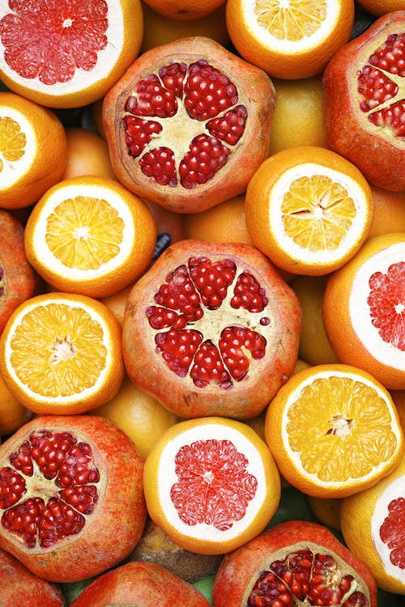
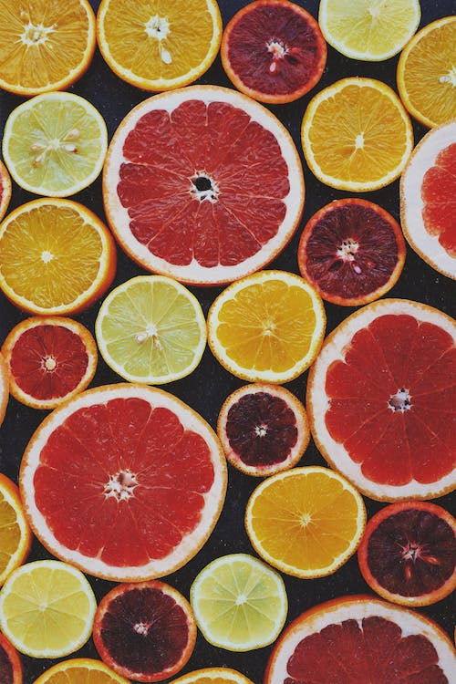
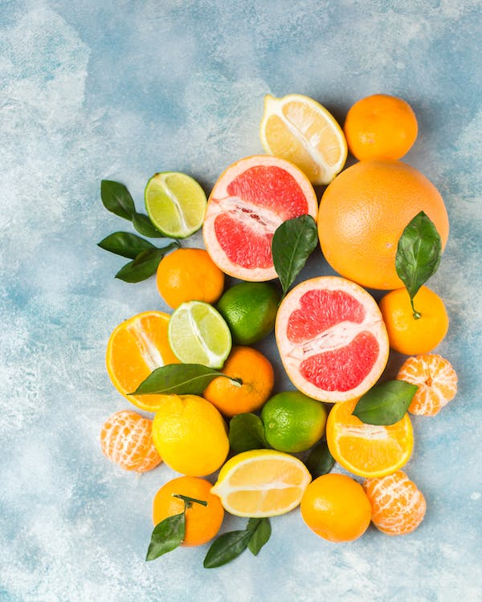
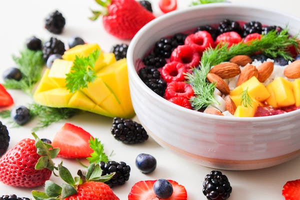
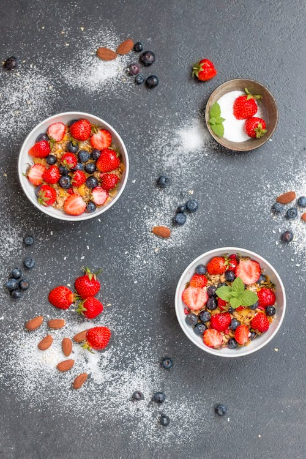

Strawberry is really good for skin as it is a rich source of antioxidants. Abundant in ellagic acid, it protects the skin from damaging UV rays. Furthermore, the antioxidants also help in reversing the damage caused by UV rays. This acts as an anti-ageing agent for your skin by delaying wrinkles and fine lines.
Eating one medium apple a day may help lower blood pressure, cholesterol, and inflammation all of which support a healthy heart. Eat the peel when you can as the fiber and polyphenols found in the peel benefit heart health. Apples can strengthen your lungs.

Is it good to eat grapes every day? Your immune system gets a boost The saying should go: "Eat a grape a day and keep the doctor away." Grapes contain plenty of nutrients that contribute to keeping your body healthy. According to the U.S. Department of Agriculture (USDA), this fruit is a source of vitamins A, C, and K, beta-carotene, and potassium.

Kiwi | Description, Fruit, Nutrition, Species, & Facts ... kiwi, (Actinidia deliciosa), also called kiwifruit or Chinese gooseberry, woody vine and edible fruit of the family Actinidiaceae. The plant is native to mainland China and Taiwan and is also grown commercially in New Zealand and California.

About 32 grapes can be considered as one serving. Eating one
serving is okay if you are already on a healthy diet and physically active. But otherwise, stick to 8 to
10 grapes a day.
A grape is a fruit, botanically a berry, of the deciduous woody vines of the flowering plant genus
Vitis. Grapes are a non-climacteric type of fruit, generally occurring in clusters. The cultivation of
grapes began perhaps 8,000 years ago, and the fruit has been used as human food over history.

Cherry is a stone fruit, also known as fleshy drupe, grown on many plants of the genus Prunus. The cherries obtained from the cultivars of several species, such as the sour Prunus cerasus and the sweet Prunus avium are generally used for commercial purposes. The name cherry can also be related to the tree, cherry tree and its wood, often can also applied to almonds and other visually similar flowering trees of the genus Prunus, as in cherry blossom or ornamental cherry. Any of the cherry species growing outside the cultivation might be referred to as the wild cherry, Prunus avium is commonly referred to specifically by the name of wild cherry in the British Isles.